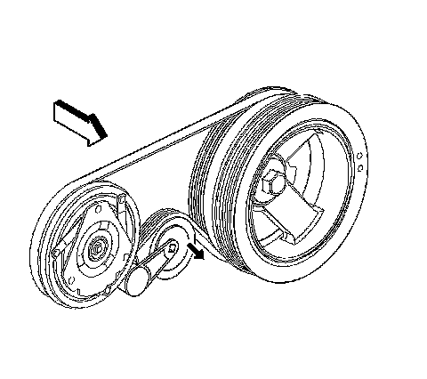
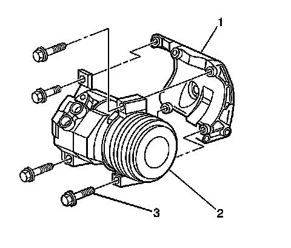

Air Conditioning Compressor Replacement
COMPRESSOR REPLACEMENT (WITH RPO CODES LY2, LMF, LY5, LH6, L76, L92 AND LMG)
TOOLS REQUIRED
J 39400-A Halogen Leak Detector
REMOVAL PROCEDURE

1. Recover the refrigerant. Refer to Refrigerant Recovery and Recharging. Refrigerant Recovery and Recharging
2. Install a ratchet into the air conditioning (A/C) belt tensioner adapter opening.
3. Remove the air cleaner resonator outlet duct.
4. Rotate the A/C belt tensioner clockwise in order to relieve the tension on the belt.
5. Remove the A/C belt from the A/C compressor.
6. Slowly release the tension on the A/C belt tensioner.
7. Remove the discharge hose bolt from the A/C compressor.
8. Remove the discharge hose from the A/C compressor.
9. Remove the suction hose bolt from the A/C compressor.
10. Remove the suction hose from the A/C compressor.
11. Discard the sealing washers. Cap all of the openings.
12. Disconnect the electrical connections.

13. Remove the A/C compressor mounting bolts. The lower right bolt (3) will stay with the compressor due to a lack of clearance.
14. Remove the A/C compressor (2) from the bracket (1).
15. If replacing the A/C compressor. Refer to Compressor Oil Balancing. Service and Repair
INSTALLATION PROCEDURE
1. Install the A/C compressor (2) to the bracket (1) through the fender well. Insert the mounting bolt (3) into the lower right mounting boss before installing the A/C compressor.
2. Install the A/C compressor to the bracket. Insert the mounting bolt into the lower right mount before installing the A/C compressor.
3. NOTE: Refer to Fastener Notice.
Install the A/C compressor mounting bolts.
Tighten the bolts to 50 N.m (37 lb ft).
4. Connect the electrical connector to the A/C compressor.
5. Install the A/C discharge hose to the compressor using new sealing washers.
6. Install the A/C discharge hose bolt to the A/C compressor.
Tighten the bolt to 16 N.m (12 lb ft).
7. Install the A/C suction hose to the compressor using new sealing washers.
8. Install the A/C suction hose bolt to the A/C compressor.
Tighten the bolt to 16 N.m (12 lb ft).
9. Install the A/C drive belt.
10. Evacuate and recharge the A/C system. Refer to Refrigerant Recovery and Recharging. Refrigerant Recovery and Recharging
11. Install the air cleaner resonator outlet duct.
12. Leak test the fittings of the component using the J 39400-A.